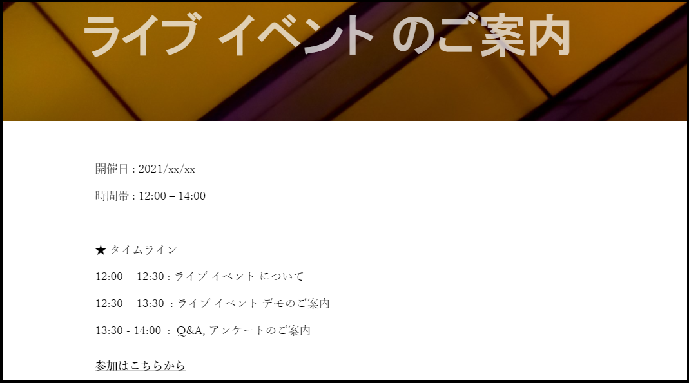
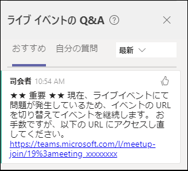
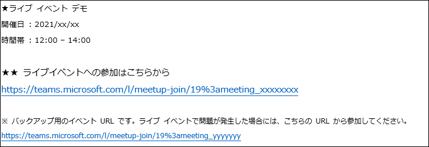

こんにちは。いつも Microsoft Teams をご利用いただきありがとうございます。Live Events Assistance Program (LEAP) 担当の吉井です。
“Live Events - 本番までの準備” で、ライブ イベントの開催にあたって必ずバックアップ イベントを作成するようにご案内しました。
実際にイベント中に何らかのトラブルが発生した場合には、トラブルが発生したライブ イベントの URL をバックアップ用のライブ イベントの URL に切り替える必要があります。
しかし、問題が起こってから参加者にバックアップ イベントの URL を周知する方法を考えるのでは間に合いませんし、開催者が焦っている中でそういったことを検討する余裕がない場合がほとんどです。
そのため、事前にバックアップ用のライブ イベントへの切り替え方法を決めたうえで、本番イベントに臨まれることをおすすめしております。
一般的なバックアップ イベントへの切り替え方法を以下にご紹介しますので、ご自身の利用シーンにあった方法をお試しください。
Sway
Microsoft Office に含まれる Sway というサービスで、任意のハイパーリンクを含むページを作成することができます。
実際の使用方法としては、参加者に Sway の URL を周知し、参加者が Sway 内のハイパーリンクからライブ イベントに参加する形になります。
画像の挿入や文章の挿入などのカスタマイズが簡単にできる便利なサービスなので、参加者向けのライブ イベントの案内の作成と合わせてご検討ください。
バックアップ イベントに切り替える場合には、以下の手順 9 でハイパーリンクの遷移先をバックアップ イベントの URL に変更します。URL 変更後に、改めて参加者がハイパーリンクにアクセスすることで、参加者に周知した内容を変更せずに、バックアップ イベントにアクセスさせることができます。
★ Sway でのハイパーリンクの作成方法
- “https://sway.office.com/" にアクセスします。
- [新規作成] をクリックします。
- [リンク] をクリックします。
- [表示テキスト] に任意の文字列を入力します。（ハイパーリンクのタイトルになります）
- [Web リンク] にライブイベントの URL を入力します。
- [共有] をクリックします。
- 公開範囲を設定します。(組織外のユーザー向けのライブイベントの場合には、“リンクを知っている人は誰でも” を選択)
- “招待した人に次の操作を許可する“ が “表示” になっていることを確認し、リンクのコピーを選択し、リンクを取得します。
- URL を差し替える場合には、作成者にて再び Sway リンクにアクセスし、[詳細] を選択し、ハイパーリンクをクリックすることで、手順 3 の画面に戻りますので、手順に沿って [Web リンク] を変更してください。
<参考情報>
Sway を始める : https://support.microsoft.com/ja-jp/office/2076c468-63f4-4a89-ae5f-424796714a8a

ショートリンク
任意のサービスで、本番のライブ イベント URL を遷移先にしたショートリンクを作成し、ショートリンクを参加者に周知します。
バックアップ イベントに切り替える場合には、ショートリンクの遷移先を本番用 URL からバックアップ用 URL に変更してください。遷移先変更後に、改めてショートリンクにアクセスすることで、参加者に周知したリンクを変更せずに、バックアップ イベントにアクセスさせることができます。
Q&A のアナウンス
ライブ イベントで Q&A を公開している場合には、バックアップ イベントへの切り替えが必要になったタイミングで、Q&A のアナウンスを利用して、バックアップ イベントの URL を参加者に周知する方法があります。
開催者画面から Q&A を開き、”アナウンスを作成” をクリック、バックアップ URL を参加者に案内するためのアナウンスを作成し公開してください。
※ Q&A 画面を開いていないユーザーがアナウンスに気づきにくい、という懸念があります。

本番用イベント URL と併記
参加者に周知する際に、本番用のイベントの URL とバックアップ イベントの URL を併記します。
最も手間がかからず、開催者側のオペレーションも少なくて済むため、バックアップ URL への切り替えをお願いしやすい社内向けイベントなどではおすすめの方法です。

どんなに念入りに準備をしても本番イベントでトラブルが起きることはあります。トラブルが起こってしまったときに、必要以上に焦らないためにも事前の準備がとても重要です。事前の準備をしっかりしたうえで、本番のライブ イベントに臨みましょう！！
ライブイベント開催の際には、お気軽に Live Events Assistance Program までご連絡ください。
※本情報の内容（添付文書、リンク先などを含む）は、作成日時点でのものであり、予告なく変更される場合があります。